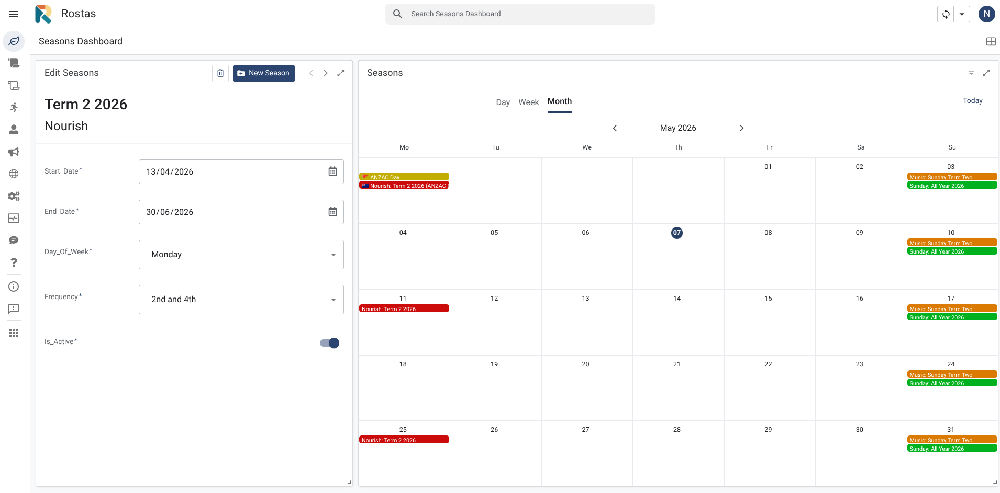
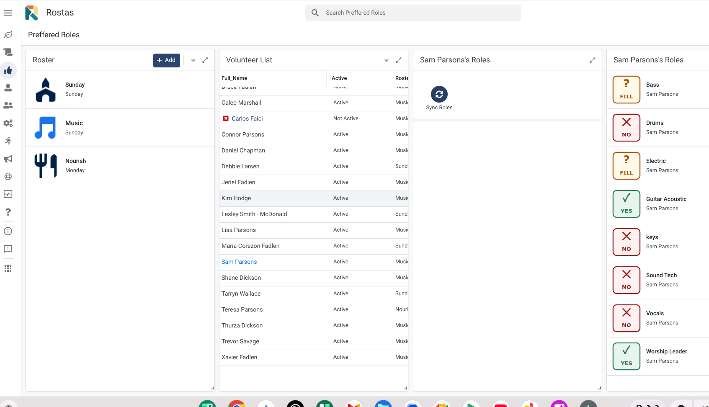
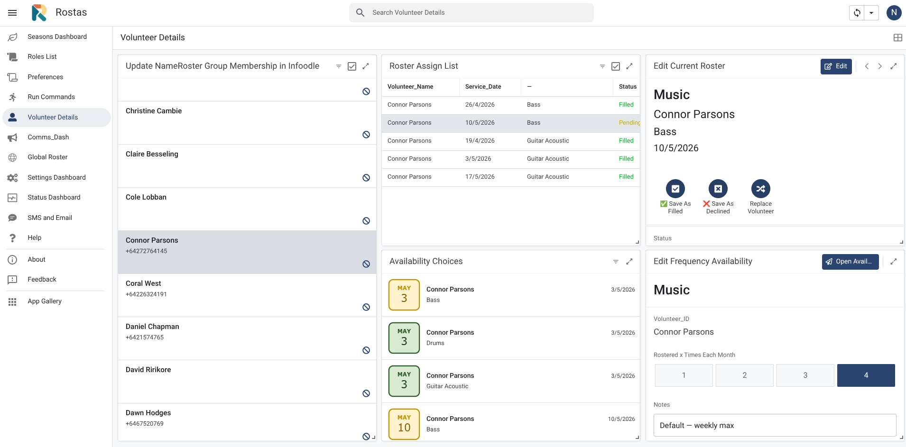
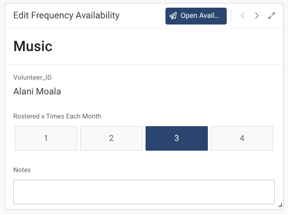
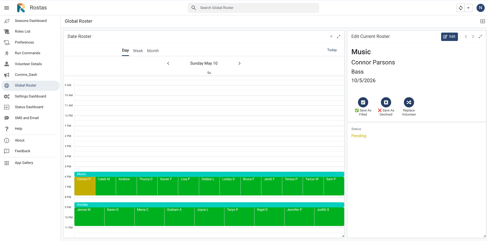
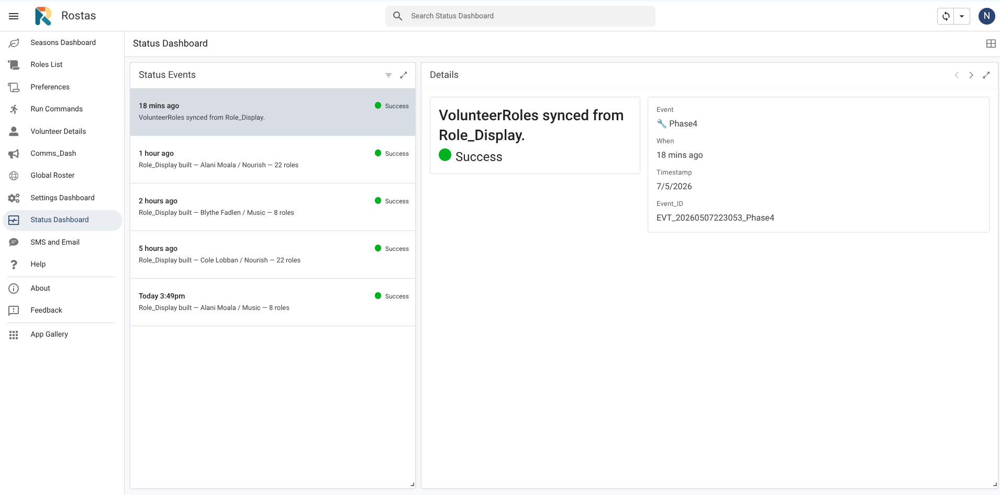

Rostas Coordinator Guide
A complete guide to building rosters, managing replacements, and protecting your volunteers' energy.
Orchestrating with Empathy — 15 slides

Introduction
Rostas is the coordinator app for managing Church & Community volunteer rosters. It currently connects to the Infoodle database to access volunteer data, and handles notifications, reminders, and SMS replacements automatically using the Twilio SMS service (with ClickSend retained as a switchable fallback). Both these services are paid services requiring a subscription.
This guide covers everything you need: from collecting availability through to handling replacements. Part A introduces Rostas with a video and overview. Part B covers Roster Coordinator tasks. Part C covers additional Overall Coordinator tasks for those who have database access. Part D covers expert/technical tasks requiring Apps Script access.
Who Can Do What
| Task | Roster Coordinator | Overall Coordinator | Tech Support |
|---|---|---|---|
| Send availability emails | ✓ | ✓ | ✓ |
| Role preference setup | ✓ | ✓ | ✓ |
| View role preferences (Preferred Roles) | ✓ | ✓ | ✓ |
| Volunteer frequency settings | ✓ | ✓ | ✓ |
| Build, preview & send roster | ✓ | ✓ | ✓ |
| Season editing | ✓ | ✓ | ✓ |
| Manual volunteer replacement | ✓ | ✓ | ✓ |
| View and reset volunteer SMS/email opt-outs | ✓ | ✓ | ✓ |
| Set Preferred Buddy and Family pairing | ✓ | ✓ | ✓ |
| Toggle Relational Rostering ON/OFF | — | ✓ | ✓ |
| Volunteer sync from Infoodle | — | ✓ | ✓ |
| Config & settings | — | ✓ | ✓ |
| Adding volunteers (via Infoodle) | — | ✓ | ✓ |
| Adding a new roster type | — | ✓ | ✓ |
| Apps Script / technical changes | — | — | ✓ |
Part B covers all tasks marked ✓ for Roster Coordinators. Part C covers the additional tasks available to Overall Coordinators only.
1. Getting Started with Rostas
Rostas is built primarily for desktop access, though it can also be used on a tablet.
The Rostas Views
When you open Rostas you will see these views in the left-hand sidebar. Tap the relevant view to navigate to that area of the system.


Reading Results
Every action writes a result message in the Command history panel. Common results:
- Filled: 12, Pending: 3, Unfilled: 0 — roster built successfully. Pending means a volunteer marked Unsure but has been provisionally assigned.
- Unfilled: 2 — two slots could not be filled. Review the roster and handle manually.
- Sent to: 14 volunteers — notification emails dispatched.
- Error: … — something went wrong. Note the message and contact tech support if it repeats.
The Roster Cycle
Each roster follows the same sequence of steps. Run them in order — skipping a step or running them out of order can produce unexpected results.
| Step | Action | What it does | Who |
|---|---|---|---|
| 0 | Refresh calendar | Recalculates season dates, overlays NZ public and school holidays. | Roster Coordinator |
| 1 | Sync volunteers | Pulls latest volunteer data from Infoodle (auto at 2am each night or manually via Run Commands). | Overall Coordinator |
| 2 | Role preferences | For any new volunteers added to a roster either:
| Roster Coordinator |
| 3 | Send availability emails | Ask volunteers which dates they are available for. (Run Commands view) | Roster Coordinator |
| 3b | Check frequency settings | Set a monthly cap per roster type per volunteer. Use Volunteer Details view. | Roster Coordinator |
| 3c | Check relational settings | (Optional) Confirm preferred buddies and family pairings in the Relational SMS Email view. Toggle global Relational Rostering ON/OFF in Settings → Quick Controls. | Roster Coordinator |
| 4 | Build roster | System assigns volunteers to roles based on availability & preferences. (Run Commands — Build Roster) | Roster Coordinator |
| 5 | Preview communications | Check email template formatting and make sure you are happy with the email and SMS messages that will be sent out. (Run Commands or Comms Dashboard) | Roster Coordinator |
| 6 | Send notifications | Volunteers receive assignment email and SMS. (Run Commands — Send Notifications) | Roster Coordinator |
3. Step 0 — Refresh the Seasons Calendar
Run this at the start of each roster build and any time you make changes to season dates. It recalculates all roster dates, overlays NZ public holidays and school holidays, and updates the calendar view.
In Rostas → Run Commands, tap 0. Refresh calendar. Wait for the result message to confirm completion. Check the Seasons Calendar view to confirm dates look correct.

Step 2 — Role Preferences
Role preferences tell the system which roles each volunteer is willing to do. The system needs this information before it can build the roster.
Option A — Volunteers Set Their Own Preferences
Volunteers receive a personalised link and tap through each role, choosing 'Yes I do this', 'Happy to fill in', or 'Not for me'.
In Rostas → Run Commands, tap 2. Send role preference emails. Volunteers receive an email with a personalised link. Allow a few days for responses before building the roster. Check who has responded in the Preferred Roles view.
Option B — You Set Preferences for the Volunteer
If a volunteer is not comfortable using the link, or for new volunteers who have not yet set preferences, you can set their roles directly in Rostas.
Open the Preferred Roles view. Select the volunteer on the left, then review and edit their role assignments on the right.


Preferred Roles — Three-Panel Tile View
The Preferred Roles view includes a three-panel dashboard layout that gives a visual overview of every volunteer's role preferences for a selected roster. Select a roster on the left, browse volunteers in the middle, and see colour-coded role tiles on the right.
The three panels
| Panel | What it shows | What to do |
|---|---|---|
| Left — Roster Selector | Sunday, Music, Nourish | Tap a roster type to select it. The middle panel updates to show only volunteers in that roster. |
| Middle — Volunteer List | All volunteers assigned to the selected roster | Tap a volunteer name to select them. Their role preferences appear as tiles on the right. |
| Right — Role Tiles | Every role in the roster, colour-coded by the selected volunteer's preference | Read-only — shows the volunteer's current role settings at a glance. |
Reading the colour-coded tiles
How to use the three-panel view
Tap a roster type in the left panel (e.g. Sunday). The middle panel refreshes to show only volunteers who serve in that roster.
Tap a volunteer name in the middle panel. Their role preferences load into the right panel as colour-coded tiles.
After selecting a volunteer, tap the sync button (the circular arrow icon at the top right of the screen). This refreshes the role tiles to show the selected volunteer's preferences. The tiles will not update automatically until you tap sync.
When to use the three-panel view
- Before building a roster — quickly check which volunteers have Primary roles set for key positions.
- After receiving role preference responses — verify that a volunteer's selections look right.
- When finding a manual replacement — see at a glance who else can fill a specific role.
- Onboarding a new volunteer — confirm their role preferences have been recorded before the next roster build.
Volunteer Frequency Settings
Frequency settings control how many times per month a volunteer can be rostered for a given roster type. The roster engine strictly enforces these caps.
To set or update frequency:
- In Rostas, go to the Volunteer Details view. Select the volunteer from the left panel.
- Use the arrow buttons (‹ ›) to switch between roster types if the volunteer serves in more than one roster.
- In the Max Days Rostered panel (bottom centre), tap 1, 2, 3, or 4 to set the monthly maximum. The default is 4 for weekly rosters, 2 for fortnightly rosters.
- Add a note if helpful (e.g. '4th Monday only' or 'family commitments 1st Wednesday').
- Save. The change takes effect at the next roster build.


6. Step 3 — Send Availability Emails
Availability emails go to all active volunteers for your roster type. Each volunteer receives a personalised link showing the upcoming dates. They tap each date to mark themselves Available, Unsure, or Can't make it, then tap Save.
In Rostas → Run Commands, tap 3. Send availability emails. The result confirms how many emails were sent. Allow 5–7 days for volunteers to respond. Volunteers who do not respond are treated as Unavailable at roster build time.


What if someone missed the email?
You can update a volunteer's availability directly in Rostas via the Volunteer Details view. Select the volunteer from the left panel, then use the Availability Requests panel (bottom right) to find the date and update their status.
Automatic SMS nudge for non-responders
After availability emails are sent, Rostas automatically sends a follow-up SMS to any volunteer who has not yet responded — no manual action required. The nudge fires once per cycle, a set number of days after the emails were sent, and only goes to volunteers who still have no upcoming availability response on record.
- You send availability emails (Step 3). The system records the send date automatically.
- After N days (default: 2), the daily background process checks who has not yet responded.
- Non-responders receive a short SMS nudge with a direct link to their availability form.
- The nudge fires once only per email cycle — it will not repeat.
- The cycle resets automatically the next time availability emails are sent.
AVAILABILITY_SMS_NUDGE_DAYS (set 1–5 days) and AVAILABILITY_SMS_NUDGE_TEMPLATE (edit the SMS text). Placeholders available: [Name], [RosterType], [Link].
SMS_ENABLED, quiet hours, and individual volunteer SMS opt-outs. Opted-out volunteers are silently skipped and counted as Skipped in the daily run log, not as errors.
Step 4 — Build the Roster
The roster engine assigns volunteers to roles based on their availability and role preferences. It works through four priority tiers and within each tier selects the volunteer who has been rostered least recently. When Relational Rostering is enabled, a second pass tries to bring household members and preferred buddies together on the same dates — see Relational Rostering for full detail.
The Four Priority Tiers
| Tier | Availability | Role Match | Sort within tier |
|---|---|---|---|
| 1 | ✅ Available | Primary role (Yes, I do this) | Fewest assignments in lookback window, then longest since this specific role |
| 2 | ✅ Available | Fillable role (Happy to fill in) | Same as Tier 1 |
| 3 | ❓ Unsure | Primary role | Same as Tier 1 |
| 4 | ❓ Unsure | Fillable role | Same as Tier 1 |
In Rostas → Run Commands, tap 4. Build roster. The Music roster can take up to 10 minutes — this is normal. The system builds the next 8 weeks of dates by default (configurable per roster type in Settings — ROSTER_BUILD_WEEKS_{Type}). Check the result message: Filled, Pending, and Unfilled counts. Review the roster in the Global Roster view before sending.
Reviewing the Result — The Traffic Light System
Editing the Roster Before Sending
In the Global Roster view, tap or click any assignment to open the edit panel on the right. Take particular notice of any red (unfilled) dates — these may require you to find a replacement or it may be workable to have fewer volunteers on duty that week.
You also have the following options at this stage:
- Replace Volunteer — a drop-down offers a list of possible replacement volunteers.
- Save as Filled — manually confirm a Pending (Unsure) assignment.
- Save as Declined — this automatically starts the SMS replacement chain to find a substitute.


Step 5 — Preview Communications
Before sending notifications, use the Comms Dashboard view to see exactly what every communication step will look like — notification emails, reminder emails, SMS messages, and the volunteer reply pages.
In Rostas → Comms Dashboard, select a roster type from the list on the left. A full grid of communication cards appears on the right — each card represents one step in the volunteer communication journey. Tap any card to open a live preview. Check volunteer names, roles, dates, links, and message wording. Close the preview and proceed to Step 6 when satisfied.

Step 6 — Send Notifications
Notifications go to every volunteer with a Filled or Pending assignment. Each volunteer receives an email with their role and date, and a link to confirm (for pending) or decline. An SMS is also sent.
In Rostas → Run Commands, tap 6. Send Notifications. The result confirms how many volunteers were notified. Volunteers receive their email and SMS within a few minutes.
Manual Replacement
Use manual replacement when a volunteer contacts you directly — for example, they phone to say they cannot make it and suggest someone else, or you need to make a swap yourself without waiting for the SMS chain.
Go to Rostas → Global Roster or Volunteer Details view. Select the assignment you want to change. Tap Replace Volunteer, then select the replacement from the dropdown. Save. The system processes the swap within 1 minute. Check the Status column — it changes from Pending to Done when complete.
11. The SMS Replacement Chain
When a volunteer taps 'Can't make it' in their notification email, the system automatically begins contacting other available volunteers by SMS one at a time.
What happens automatically:
- The system finds the next suitable available volunteer for that role and date.
- It sends them an SMS with a link to accept or decline.
- If they accept → they are added to the roster and the chain stops.
- If they decline or do not respond within 2 hours (standard) or 15 minutes (urgent/imminent events) → the next volunteer is contacted.
- If no one accepts → the coordinator receives an email letting you know the slot is still unfilled.
12. Checking the Status Dashboard
The Status Dashboard shows the status of all notifications sent from Rostas — emails, SMS reminders, and replacement requests. Check it after running any notification step to confirm delivery. If an error appears, use the Email Tech Support button to send an error report that automatically contains the error detail.
Note: the full Audit Log is accessible to Technical Support only. If something does not look right, contact Tech Support and send the error message.

Common things to look for:
- SMS FAILED — a text message did not deliver. Usually a Twilio issue. Note the error and contact Tech Support if it persists.
- Chain exhausted — no volunteer accepted the replacement. The slot is still unfilled.
- Assignment not found — a Manual Replace request used an incorrect assignment. Check and resubmit.
Relational SMS Email — One View, Four Controls
The Relational SMS Email view is your single place to manage four per-volunteer settings: SMS opt-out, Email opt-out, family pairing, and preferred buddy. Select any volunteer from the Vol Opt Picker list on the left to see and edit their settings in the Details panel on the right.

What the Details panel shows
Managing Volunteer SMS and Email Opt-outs
Volunteers can opt out of receiving roster SMS messages and/or emails at any time using a self-service preferences link that appears at the bottom of every Rostas email, on the SMS reply page, and on the availability and role preference form success screens. Coordinators can also view and override any volunteer's opt-out status from the Relational SMS Email view.
How volunteers opt out
Every email sent by Rostas includes a "Manage email and SMS preferences" link in the footer. Tapping it opens a simple self-service page where the volunteer can toggle SMS and email on or off independently. Changes take effect immediately — no sync is required.
- Every roster notification email
- Every reminder email (sent before each service)
- Every availability request email
- Every role preference invitation email
- The SMS replacement respond page (YES / NO buttons)
- The availability form success screen
- The role preference form success screen (volunteer mode only)
Coordinator override — Relational SMS Email view
The Relational SMS Email view shows all volunteers with their current SMS opted out and Email opted out status. Select any volunteer from the list on the left to see and edit their opt-out flags in the Details panel on the right. Two NO / Yes toggle buttons appear — tap Yes to record an opt-out, tap NO to reinstate normal sending. Changes save immediately.
Relational Rostering — Pairing Households and Buddies
Relational Rostering is an optional behaviour layer on top of the four-tier engine. When enabled, after the engine has filled every slot using the normal availability + role + fairness logic, a second pass examines the result and tries to bring related volunteers onto the same service dates wherever it can do so without breaking any other rule.
Why relational rostering helps
- Families serve together. Parents and teens on the same Sunday means one car trip, one supervision conversation, and a shared sense of contribution.
- Buddies have a steady partner. Volunteers who like working alongside a particular person are more likely to say yes and less likely to drop out.
- Replacements are warmer. When someone declines, the first SMS goes to their buddy or family member, not a stranger.
- Doesn't override fairness. The tier system and frequency caps still apply first. Relational pairing only nudges within the candidates the engine would already have chosen.
How to turn it on or off
Go to Settings Dashboard → Quick Controls → RELATIONAL_ROSTERING_ENABLED. Tap the toggle: True turns it on system-wide, False turns it off and the engine reverts to standard tier-based assignment with no pairing pass. Changes take effect at the next roster build.

Order of operations during a build
| Pass | What the engine does |
|---|---|
| 1. Tier fill | Fills every slot using Tiers 1–4 (Green Primary → Yellow Fillable), respecting frequency caps and freeze weeks. Identical to the non-relational build. |
| 2. Pairing pass (only if enabled) | Scans the filled roster for opportunities to swap two equal-tier candidates so that a volunteer ends up on the same date as their household member or preferred buddy. Swaps are accepted only if both volunteers remain within fairness rules. |
| 3. Sort & write | Orders the final assignments by date and role, writes to RosterAssignments. |
Preferred Buddies
A preferred buddy is one other volunteer this person likes to serve alongside. The setting is per-volunteer and one-directional — volunteer A can list volunteer B as a buddy without B reciprocating. Reciprocal buddies are stronger signals to the engine but not required.
Setting a preferred buddy
In Relational SMS Email view, select the volunteer in the Vol Opt Picker list. In the Details panel, tap the Preferred_Buddy dropdown and choose another volunteer. Save. The change takes effect at the next roster build.
What the engine does with the buddy
- Build phase: If both buddies are in the candidate pool for the same role on the same date, the engine prefers to keep them on that date together (within the same tier and fairness window).
- Replacement chain: When the original volunteer declines, the buddy is the first person contacted by SMS, ahead of the general candidate list.
- Notifications: No special treatment — buddies receive standard notifications.
Family Pairing
Family pairing uses household relationships imported from Infoodle. The Connected Volunteer Names field in the Relational SMS Email Details panel shows who Rostas has detected as household members for the selected volunteer. This list is read-only — to change it, edit the household in Infoodle and run a volunteer sync.
Roster Together / Not Together
Each volunteer has a per-volunteer toggle in the Details panel: Family Members Rostered Together If Possible. Two options:
- Roster Together — the engine will try to put this volunteer on the same date as their household members during the pairing pass.
- Not Together — exclude this volunteer from family pairing. Useful for parents who deliberately serve on opposite Sundays to share childcare, or teens who prefer to serve independently.
Common scenarios
| Scenario | Recommended setting |
|---|---|
| Couple who like to serve together | Both: Roster Together |
| Couple sharing childcare on alternate Sundays | Both: Not Together |
| Teen learning a role from their parent | Both: Roster Together |
| Adult sibling who happens to share a household | Coordinator's call — ask them |
| Volunteer in a different roster from the rest of their household | Either — the engine only pairs within the same roster type |
When the master toggle is OFF
If RELATIONAL_ROSTERING_ENABLED is set to False in Settings → Quick Controls, the per-volunteer Roster Together / Not Together and Preferred_Buddy settings have no effect on roster builds. The settings remain visible and editable in the Relational SMS Email view, ready to take effect if the master switch is later turned back on.
Step 1 — Volunteer Sync from Infoodle
Infoodle is a membership database. Rostas syncs volunteer data from Infoodle every morning at 2am automatically. You can also run a manual sync at any time using the Run Commands view.
Run a manual sync when:
- A new volunteer has been added to Infoodle and needs to appear in Rostas immediately.
- A volunteer's contact details (email or mobile) have changed in Infoodle.
- A household has been edited in Infoodle and you want the Connected Volunteer Names in the Relational SMS Email view to reflect the change.
- You are about to build a roster and want to make sure you have the latest data.
In Rostas → Run Commands, tap 1. Sync volunteers from Infoodle. The sync runs in two steps and takes about 1–2 minutes. The result confirms how many volunteers were updated.
Adding a New Volunteer
New volunteers must be added to Infoodle first and assigned to the correct Infoodle group for their roster type. Once in Infoodle, run a manual sync and they will appear in Rostas. You will then need to set their role preferences before they can be included in a roster build. If they belong to a household with existing volunteers, the Connected Volunteer Names will populate automatically after the sync.
Settings and Configuration
System settings control how Rostas behaves — coordinator contacts, reminder timing, message wording, and which features are active. All settings are managed through the Settings Dashboard view in Rostas. Settings are grouped by category; tap a category to see its settings, then tap any row to view details and edit the value in the right-hand panel.

Contacts — Coordinator Contact Details
Each roster type has its own coordinator name, email, and mobile number used in outgoing messages, escalation alerts, and the SMS replacement chain. The general COORDINATOR_NAME / EMAIL / PHONE keys are used as fallbacks where no type-specific value is set.
| Setting Key | What it controls | Format |
|---|---|---|
COORDINATOR_NAME | Default coordinator name used in messages and escalations | Text |
COORDINATOR_EMAIL | Default coordinator email — receives summary emails and error escalations | Email address |
COORDINATOR_PHONE | Default coordinator mobile — receives urgent SMS escalations and all messages in test mode | +64... format, no spaces |
COORDINATOR_SUNDAY / _EMAIL / _PHONE | Sunday-specific coordinator contact details | As above |
COORDINATOR_MUSIC / _EMAIL / _PHONE | Music-specific coordinator contact details | As above |
COORDINATOR_NOURISH / _EMAIL / _PHONE | Nourish-specific coordinator contact details | As above |
+64 international format with no spaces — e.g. +64211234567. An incorrectly formatted number will cause SMS delivery to fail silently.
Message Wording — Email Notification Templates
These settings control the wording of the roster notification email sent to volunteers at Step 6. Use the Comms Dashboard to check how changes look before sending to volunteers.
| Setting Key | What it controls |
|---|---|
EMAIL_SUBJECT | Subject line of the roster notification email |
EMAIL_INTRO_TEXT | Opening paragraph. Use [Name] as a placeholder for the volunteer's first name |
EMAIL_INTRO | Short intro line above the roster assignment table |
EMAIL_ARRIVAL_NOTE | Optional note below the table — e.g. arrival time or parking instructions. Leave blank if not needed |
EMAIL_SIGNOFF | Closing line below the table — e.g. a thank-you message |
EMAIL_Tech_Support | Email address shown to volunteers as the tech support contact |
Timing & Behaviour — Reminder Settings
These settings control when and how reminder messages are sent to volunteers in the days before a service. Reminder emails and SMS are sent automatically — no manual action is required once these are configured.
| Setting Key | What it controls | Values |
|---|---|---|
REMINDER_DAYS_BEFORE |
How many days before a service the reminder email is sent |
1234567
Highlighted = current default (3)
|
REMINDER_INTRO_TEXT | Opening line in the reminder email | Text |
REMINDER_CANT_MAKE_IT | Line prompting volunteers to tap the decline link if they can't attend | Text |
REMINDER_SIGNOFF | Closing line of the reminder email | Text |
REMINDER_SMS_TEMPLATE | Wording of the reminder SMS. Placeholders: {firstName} {roleName} {dateLabel} {declineUrl} | Text |
AVAILABILITY_SMS_NUDGE_DAYS |
How many days after availability emails before the system texts non-responders. Default: 2. |
12345
|
AVAILABILITY_SMS_NUDGE_TEMPLATE | Wording of the SMS nudge to non-responders. Placeholders: [Name] [RosterType] [Link] | Text |
Message Wording — SMS Replacement Chain Templates
These settings control the wording of all SMS messages sent during the replacement chain — when a volunteer declines and Rostas works through the backup list to find a replacement.
| Setting Key | When it is sent | Placeholders available |
|---|---|---|
SMS_REPLACEMENT_REQUEST | Sent to each backup volunteer asking if they can cover the role | [Name] [Role] [DayOfWeek] [Date] [Link] [Deadline] |
SMS_TEMPLATE_CONFIRM | Sent to the backup volunteer who accepts — confirms their assignment | [Name] [Role] [Date] |
SMS_TEMPLATE_RELEASE | Sent to the original volunteer once a replacement has been found | [Name] [Role] [Date] |
SMS_TEMPLATE_ESCALATE | Sent to the coordinator when the full backup list is exhausted with no replacement found | [Role] [Date] |
SMS_YES_MESSAGE | Confirmation message when a volunteer taps Yes via the SMS reply link | {name} {date} {role} |
SMS_NO_MESSAGE | Response message when a volunteer taps No via the SMS reply link | {name} |
SMS_MANUAL_REPLACE | SMS sent to a volunteer added via the Manual Replace feature | [Name] [Role] [Date] [DeclineURL] [RosterURL] |
Message Wording — SMS Provider
Rostas supports two SMS providers: Twilio and ClickSend. The active provider is controlled by the SMS_PROVIDER key in the Message Wording category — no code changes are needed to switch. Twilio is the current active provider. ClickSend is retained as a switchable alternative.
| Setting Key | What it controls | Notes |
|---|---|---|
SMS_PROVIDER | Active SMS provider. twilio = Twilio (current), clicksend = ClickSend | Change in Settings only — no code changes needed |
CLICKSEND_USERNAME | ClickSend account email address | Retained as fallback — do not delete |
CLICKSEND_API_KEY | ClickSend API key — treat as a password | Retained as fallback — do not share |
CLICKSEND_FROM | Sender name shown on volunteers' phones when using ClickSend (max 11 chars) | Subject to NZ carrier support |
SMS_PROVIDER = clicksend to switch to ClickSend, or SMS_PROVIDER = twilio to switch back. No other changes needed — credentials for both providers are stored in Settings.
Timing & Behaviour — Roster Engine
These settings control how far ahead rosters are built, how long volunteers have to respond, and how quickly the SMS replacement chain moves between contacts.
| Setting Key | What it controls | Values |
|---|---|---|
ROSTER_BUILD_WEEKS_SundayROSTER_BUILD_WEEKS_MusicROSTER_BUILD_WEEKS_Nourish |
How many weeks ahead the roster engine builds for each type. | 4681012 |
AVAILABILITY_WEEKS_AHEAD |
How many weeks ahead the availability form shows to volunteers. Should be ≥ your largest ROSTER_BUILD_WEEKS value. |
4681012 |
ROSTER_FREEZE_WEEKS |
How many upcoming weeks are protected from being overwritten when you rebuild a roster. | 123456 |
FORM_DEADLINE_DAYS |
How many days volunteers have to complete the availability form before it closes | 234567 |
SMS_TIMER_NORMAL_MINS |
Minutes to wait before texting the next backup volunteer (service more than 24 hours away) | 306090120150180 |
SMS_TIMER_URGENT_MINS |
Minutes between contacts when the service is less than 24 hours away | 510152030 |
SMS_TIMER_PANIC_MINS |
Minutes between contacts during a last-minute replacement | 3510 |
SMS_QUIET_START / SMS_QUIET_END |
The time window during which SMS messages will not be sent. Default: no SMS between 9:00pm and 8:00am. | Time (24hr format) |
NO_CONSECUTIVE_ROLE_FRAGMENTS |
Role name fragments where week-after-week rostering is avoided. Add additional roles as comma-separated values. Currently set for: Kitchen Manager, Linen Washing, Worship Leader. |
Text (comma-separated) |
ROLE_PREF_ROSTER_TYPES | Comma-separated list of roster types that use the role preference email step. Default: Sunday,Music | Text |
Quick Controls — Four Global Toggles
The Quick Controls category contains four global on/off toggles that affect the whole system. All four use a True / False toggle in the Settings Detail View panel on the right. These must be correctly set before go-live and should only be changed deliberately.
| Setting Key | What it does | Live setting |
|---|---|---|
RELATIONAL_ROSTERING_ENABLED |
Pairs household members and preferred buddies on the same service dates. When True, families are scheduled together. When False, standard tier-based assignment only — no pairing pass. | TrueFalse |
SMS_ENABLED |
Master kill switch for all SMS. When False, no SMS is sent anywhere in the system — replacement chain, reminders, escalations — all suppressed. Twilio credentials are preserved. | TrueFalse |
SMS_TEST_MODE |
When True, all SMS messages are redirected to the coordinator phone only — no volunteer receives any text. Use during testing. Must be False in production. | TrueFalse |
EMAIL_TEST_MODE |
When True, all roster notification emails and reminder emails are redirected to the coordinator email only. No volunteer receives any email. Must be False in production. | TrueFalse |
SMS_TEST_MODE→ FalseEMAIL_TEST_MODE→ FalseSMS_ENABLED→ TrueRELATIONAL_ROSTERING_ENABLED→ coordinator's choice. Start with False to verify the standard build first, then switch to True once you're happy with it.
If you are unsure whether the system is in live or test mode, check the Status Dashboard — it shows a Test Mode active banner when either test mode is on.
Tech Support Only — Settings to Leave Alone
The Tech Support Only category contains settings that are visible in the Settings Dashboard but should not be edited by coordinators. Each is explained below so you understand what it does and why it is restricted.
WEBAPP_URL — Volunteer web app addressThis is the URL of the volunteer-facing web app. It is generated by Google Apps Script and does not change unless the script is redeployed from scratch. Redeployment is a rare technical operation. When it happens, every link previously sent to volunteers stops working until this setting is updated.
What to do: Tech support will handle the update. See Part D for the technical procedure.
INFOODLE_GROUP_IDS — Which Infoodle groups are syncedA comma-separated list of Infoodle group numbers that Rostas pulls from during the volunteer sync.
Why it's restricted: Adding an incorrect group ID causes the sync to attempt to pull from a non-existent group. Removing a group ID means those volunteers disappear from Rostas on the next sync.
INFOODLE_GROUP_MAP — Which group maps to which roster typeMaps each Infoodle group ID to a roster type, using the format 499:Sunday,464:Music,502:Nourish.
Why it's restricted: The format is precise — a stray comma, missing colon, or roster type name that doesn't exactly match ROSTER_TYPES will silently break the volunteer sync. Always ask tech support to update this setting.
ROSTER_TYPES — The list of active roster typesHolds the comma-separated list of active roster types — e.g. Sunday,Music,Nourish.
Why it's restricted: Adding a name here alone does nothing useful. A new roster type also requires coordinator contact keys, build-weeks settings, Infoodle group mapping, roles, and a season. Use the Add Roster feature in Settings instead — it scaffolds everything in one step. See Adding a New Roster Type.
When to Contact Tech Support
Most day-to-day operations are fully self-contained in Rostas. The situations below require more technical involvement:
- The volunteer web app URL has changed and needs updating (after a system redeployment).
- Repeated errors appear in the Status Dashboard that do not resolve on their own.
- SMS messages stop delivering to volunteers.
- The system triggers need to be reinstalled (e.g. after a technical issue).
- Any change to Infoodle connection settings or API credentials.
- Relational rostering produces unexpected pairings or the toggle doesn't seem to be having effect.
- Anything that requires opening the Apps Script editor.
Adding a New Roster Type
New roster types can be added by an Overall Coordinator directly through Rostas. The process takes about 5 minutes and the system scaffolds all required Config keys automatically.
Step 1 — Add the Roster Type in Rostas
Go to Rostas → Settings Dashboard → Add Roster. Fill in the Roster Name, Coordinator Name/Email/Phone, Calendar Time Slot, and Infoodle Group ID. Save the row. This automatically queues an addRosterType command.
Step 2 — Wait 1 Minute
The command poller picks up the addRosterType command and adds all Config keys: COORDINATOR_{TYPE}, COORDINATOR_{TYPE}_EMAIL, COORDINATOR_{TYPE}_PHONE, SEASONS_SLOT_{type}, ROSTER_BUILD_WEEKS_{type}. It also adds the type to ROSTER_TYPES and INFOODLE_GROUP_MAP. Check the Command history panel — the result shows the number of keys added.
Step 3 — Add Roles in Roles List
Go to Rostas → Roles List. Add each role for the new roster type — set Roster_Type to the new name exactly. Set Is_Active = Active, and set Min/Max People as needed.
Step 4 — Add a Season
Go to Rostas → Seasons Dashboard. Add a new season — set start and end dates, frequency (Weekly or Fortnightly), day of week, and Is_Active = TRUE.
Step 5 — Refresh Calendar and Buttons
In Rostas → Run Commands: run 0. Refresh calendar, then run 7. Maintenance → Refresh command buttons. New Build, Send, and Preview buttons appear for the new type.
Step 6 — Import Historical Data (if applicable)
If you have an existing spreadsheet with past assignments, import it now to give the fairness engine accurate history from day one. See Appendix A1 — Import Existing Roster Data. If there is no existing history, skip this step.
Step 7 — Set Preferences and Run
Set Ministry_Pref for volunteers via Volunteer Details or after Volunteer Sync once the Infoodle group is populated. Send role preference emails if the roster type uses specialist roles. Then follow Steps 3–6 of the Roster Cycle.
Removing a Roster Type
If a roster type is no longer needed, it can be removed. Historical assignment records are not deleted — they remain in RosterAssignments for reference.
Is_Active = FALSE instead — that stops it appearing in builds without removing any data.
Rostas Run Commands
Go to Rostas → Run Commands → Step 7 Maintenance. A Delete Roster type button appears for each active roster type. Tap the button for the type you want to remove. The system processes the deletion within 1 minute. Check Command history for the result.
| What gets changed | What stays untouched |
|---|---|
5 Config keys deleted (COORDINATOR_{TYPE} etc.) | RosterAssignments rows — left intact (historical data) |
Type removed from ROSTER_TYPES and INFOODLE_GROUP_MAP | Audit_Log entries |
| Master_Roles rows marked Inactive | VolunteerRoles entries |
| Seasons rows marked Inactive | |
| VolunteerFrequency rows for this type deleted | |
| Run Commands buttons rebuilt |
Coordinator-Triggered Decline and Replace
The standard Manual Replacement lets you pick a specific replacement volunteer directly. Decline and Replace is different — it marks a volunteer as declined and hands control to the automated SMS chain, which contacts available volunteers one by one until someone accepts. When Relational Rostering is enabled, the chain begins with the preferred buddy and household members.
| Manual Replacement | Decline and Replace | |
|---|---|---|
| You choose the replacement? | ✅ Yes — pick from dropdown | ❌ No — system finds via SMS |
| Replacement gets notified? | ✅ Yes — automatic notification sent | ✅ Yes — automated SMS chain |
| Best for | Volunteer nominates own replacement | Last-minute gap, no obvious replacement |
D1. Import Existing Roster Data
The Import Existing Roster function loads a manually-made roster into Rostas. It is used when setting up Rostas for the first time with an existing roster spreadsheet, or when seeding historical data before go-live so the fairness engine has accurate assignment history from day one.
Prerequisites
| Requirement | How to check |
|---|---|
| Apps Script access | Open the spreadsheet → Extensions → Apps Script. You should see the Knox Roster project. |
| OpenAI API key (for AI cleaning only) | Apps Script → Project Settings → Script Properties → OPENAI_API_KEY. |
| Active season in Seasons tab | Is_Active should be TRUE and the date range should cover your import data. |
| Roles in Master_Roles tab | Every role name in your source spreadsheet must exactly match a role in Master_Roles. |
| Volunteers in Volunteers tab | All volunteer names must match the Volunteers tab. The AI cleaning step handles nicknames. |
Step-by-Step: Pivot Format (Recommended)
In the Rostas spreadsheet: Extensions → Apps Script. All actions are run from the Knox Roster menu at the top.
Find the Phase9_ImportRoster script and click Knox Roster → Import Existing Roster → Setup — Create Pivot tab. Delete the sample rows (rows 2–4) before pasting your data.
Copy the roster grid from your source spreadsheet — including the header row with dates and the role column. Paste into cell A1 of the ImportPivot tab. Row 1: Roles | 13/04/2026 | 27/04/2026 | … Row 2+: Soup | Jane Smith | Bronnie H | …
In the Phase9_ImportRoster Script menu → Import Existing Roster → 1. Clean roster with AI. The AI resolves nicknames, informal names, and minor role name variations. The cleaned version is written back into ImportPivot. Review before importing.
OPENAI_API_KEY is present in Script Properties. You can proceed without AI cleaning — names that do not match will be flagged as "Unmatched names". Fix them in ImportPivot and re-run.
Knox Roster → Import Existing Roster → 2. Import (Pivot format). Select the Roster Type and confirm. Results: ✅ Written — ⏭ Skipped — ⚠️ Unmatched names — ❓ Unknown roles. Correct highlighted cells and re-run until zero unmatched names and zero unknown roles.
Phase9_ImportRoster Script menu → Import Existing Roster → 4. Seed volunteer roles from import. Creates VolunteerRoles entries for each volunteer-role pairing found. Does not overwrite existing entries.
Phase9_ImportRoster menu → Import Existing Roster → 5. Seed volunteer frequency from import. Counts how many times each volunteer appears in the imported data and creates VolunteerFrequency entries.
Alternative: Flat Format
Knox Roster → Import Existing Roster → Setup — Create Flat tab. Columns: A = Service_Date (DD/MM/YYYY), B = Role_Name (exact match), C = Volunteer_Name (exact match), D = Import_Status (leave blank). Then run: Knox Roster → Import Existing Roster → 3. Import (Flat format). Follow Steps F and G above afterwards.
After the Import
| Check | How |
|---|---|
| RosterAssignments tab | Filter by Roster_Type to see imported rows. Spot-check dates, roles, and volunteer names. |
| VolunteerRoles tab | Check a few volunteers in the Preferred Roles view in Rostas. |
| Volunteer Details view | Check that frequency counts look right before running the first build. |
| Run a preview build | Run Step 4 Build Roster. If the system over-assigns someone who was heavily rostered in the imported data, re-run Step G. |
Managing the Nickname Map
Each time AI cleaning resolves a new nickname it saves the mapping to the Nickname_Map tab for future imports. To view or edit: Knox Roster → Import Existing Roster → Setup — Manage nickname map.
Troubleshooting — Import
| Problem | What to do |
|---|---|
| "No active season found" | Add a season in Seasons Dashboard with Is_Active = TRUE, run Step 0 Refresh Calendar, then retry. |
| "Role not found in Master_Roles" | Add the missing role to Roles List, or correct the role name in ImportPivot and re-run. |
| Unmatched volunteer names (red cells) | Run AI cleaning, or correct the name to match the Volunteers tab exactly. |
| "OPENAI_API_KEY not found" | Add OPENAI_API_KEY to Apps Script → Project Settings → Script Properties. |
| Frequency counts look wrong after seeding | Re-run Step G. Check RosterAssignments for the imported rows. |
| Import ran but RosterAssignments is empty | Check ImportPivot has data and the Roster_Type matches an active season. |
D2. After a Webapp Redeployment — Sync Preview URLs
Every time the Apps Script web app is redeployed, Google assigns a new WEBAPP_URL. The Rosters tab stores a Preview_URL column that must be updated whenever this changes.
In the Apps Script editor: Deploy → Manage deployments. Copy the new web app URL. In Rostas → Settings Dashboard → Tech Support Only, find WEBAPP_URL and paste the new URL. Save.
In the spreadsheet menu: Knox Roster → Developer tools → Sync Roster Preview URLs. Reads WEBAPP_URL and writes the correct ?view=preview&roster=X URL for every active roster in the Rosters tab. Inactive rosters have their Preview_URL cleared automatically.
Open WEBAPP_URL?view=preview in a browser. The roster type selector should load. If it shows a permissions error, check the deployment is set to Anyone access.
D3. Audit Log Pruning
The Audit_Log tab records every system event. Over time this tab grows large. The pruning function trims it to a manageable size without deleting recent entries.
One-Time Setup
In Phase9_ImportRoster → Setup — Audit Log Pruning. Installs a weekly time-based trigger. Run this once at go-live. Do not run again — duplicate triggers cause double-pruning.
Manual Prune
In the Dashboard Script → Prune Audit Log Now. Immediately trims the Audit_Log. Safe to run at any time.
D4. Clean VolunteerRoles Tab
The VolunteerRoles tab can accumulate blank rows or duplicates over time. The cleanup function removes these safely.
In the spreadsheet menu: Knox Roster → (run from menu) — the function is cleanVolunteerRoles in Maintenance.gs. If it is not in the menu, open the Apps Script editor, select cleanVolunteerRoles from the function dropdown, and click Run. It removes rows with a blank Volunteer_ID or Role_ID, rows where Role_Type is not Primary or Fillable, and duplicate Volunteer_ID + Role_ID combinations.
Knox Church Waitara · Rostas Coordinator Guide · May 2026